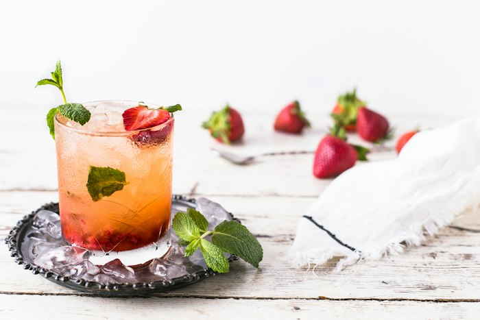
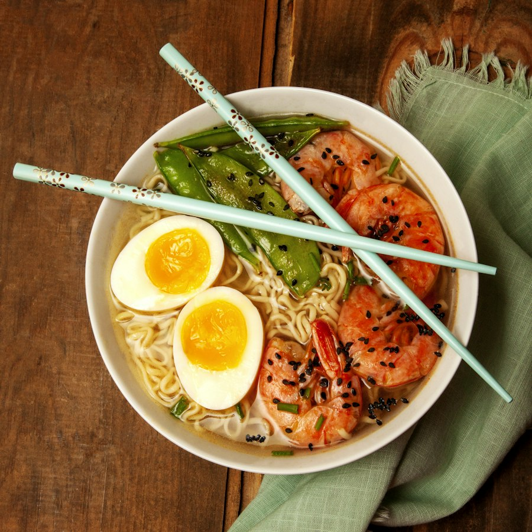

什么都能识别
从家常菜到奶茶甜品，AI 都认识——中餐、饮品、面食、轻食，一张照片就够。




AI 食物分析
两种方式任选：上传一张餐食照片，或者用文字告诉我们你吃了什么。
拖拽 / 粘贴 (Ctrl+V) / 点击上传食物照片
支持 JPG · PNG · WebP，最大 10MB，光线充足、整盘可见时识别更准
试试：
📊 分析报告 演示数据
健康评分
0/100
—
预估热量
0 kcal
—
三大营养素
蛋白质
—
碳水
—
脂肪
—
膳食纤维
—
识别到的食物
🗂️ AI 分析记录
你分析过的每一餐都会留档（MySQL），随时回看历史报告。
正在加载分析记录…
💡 快捷提问推荐
点一下自动填入文字描述框，马上开始分析。
💬 AI 营养师点评
—